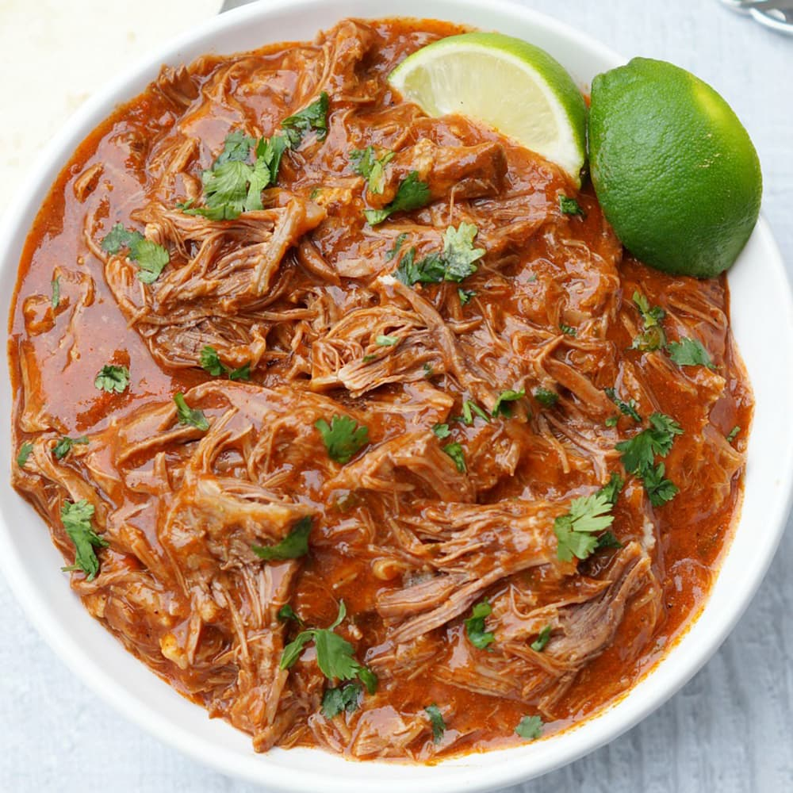

Mexican Shredded Beef

Description
Do you want a delicious taste of mexico, but without all the Aztec descended cartels trying to rip
out your heart and chop off your skin? Then you've come to the right place. This mexican shredded beef
is a lot like the previous recipe, but instead of chicken it is made of delicious beef. Mexican cuisine
is truly terrific. If you put the word mexican in front of any meat then you can find a pretty good
earth tone colored slop that is great for serving on top of rice or inside a tortilla. This is no bluff,
delicious meat awaits on the page below. I'm incredibly lazy, so this recipe is also based out of a
crock pot.
Ingredients
- 1 3-4 lb boneless beef chuck roast trimmed of excess fat. Cut into pieces.
- 1 1/2 tablespoons vegetable oil
- 1 tbs each chili powder, ground cumin, kosher salt
- 1/2 tbs each garlic powder, onion powder, smoke paprika
- 1 tsp each pepper, ground coriander
- 1 1/2 teaspoons chipotle chili pepper
- 1 cup beef broth
- 1 cup mild salsa
- 1 can diced green chiles
- 2 tablespoons tomato paste
- 2 tablespoons lime juice
- 2 tablespoons brown sugar
- 1-3 teaspoons liquid smoke
- 1 tablespoon beef bouillon
- 1 tablespoon dried oregano
Steps
- Whisk together all of the spice rub ingredients
- Pat beef pieces dry with paper towels then liberally season with the spice rub, gently pressing
to adhere. Save any excess spices to add to the pot later.
- Heat 2 tablespoons oil in a large cast iron skillet over medium-high heat. Once very hot,
add cubed beef and sear on all sides.
- Transfer beef to a 6 quart slow cooker along with all remaining ingredients, including any
leftover spices. Stir to combine. Cover and cook on high for 3 to 4 hours or on low for 6 to 8
hours, or until the beef shreds easily with two forks.
- Remove the beef to a rimmed plate or large bowl, and shred with two forks, discarding any
excess fat.
- Add the shredded beef back to the slow cooker and toss with slow cooker juice. cook
on low for 20 minutes for beef to absorb juices. Taste and season with hot sauce/cayenne pepper,
lime juice or brown sugar to taste.
- Remove beef with a pair of tongs to a serving bowl or strain in colander so tacos, etc. don't
get soggy. I like to save the liquid to cook my rice in. Serve in tacos burritos, quesadillas, taquitos,
salads, nachos, etc.